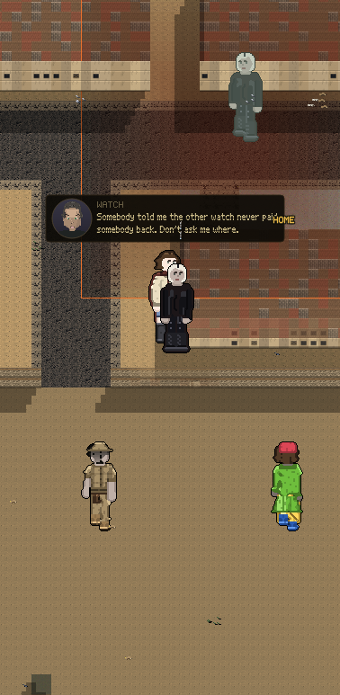

All three pictures are the real game. Same street, same person talking, three steps of one story.
One man did not pay somebody back. Three tellings later the street believes a different man beat somebody up.

Your game already had a line where somebody says "I heard a version of it. Probably the wrong version." It had never once been true. Stories got passed around perfectly, word for word, forever. Now they do not.
| What happens | How often |
|---|---|
| The place slides. Nobody is sure where. | 1 in 2 |
| The hour goes. Nobody is sure when. | 1 in 3 |
| It grows. The bigger version is the one people repeat. | 1 in 4 |
| It lands on the wrong person. | 1 in 5 |
These four numbers are the dials, and they are yours. Right now a story never gets smaller and never gets safer, only louder and wronger, because nobody repeats the boring version. That part is real life, not a choice. How fast it happens is the choice.
| People on the block | 61 |
| Stories going around | 93 |
| How many are about you | 0 |
| People being talked about | 14 |
| People carrying news | 24 |
| Stories that got something wrong | 84 |
| Blamed on the wrong person | 27 |
| Versions of the single worst-mangled story | 8 |
Before this, the number of stories in your city that were about somebody other than you was ONE, in sixteen hundred lines of code, and not one of them had ever been wrong.
Walking the block for four hundred steps, somebody carrying news came close enough to hear exactly once, and they said it. That is rare on purpose for now: people only talk when they have really stood together long enough, and only four bodies get drawn near you at a time since you said nobody should stand on anybody. If you want the street louder, say so and it gets louder.